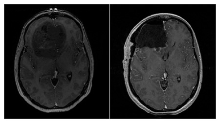
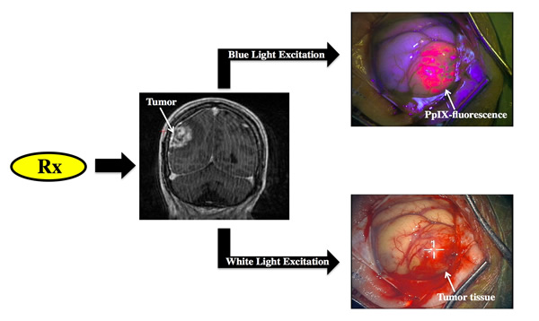
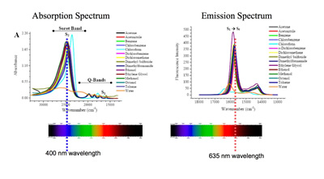

Fluorescence Guided Resection
Background
What is the problem ?
The problem we are working towards addressing in our research is the problem of brain tumors. Brain tumors account for ~2% of all cancer deaths in the United States. Specifically, brain tumors known as gliomas, because they originate from glial cells in the brain, account for ~ 70-80% of all brain tumors. Gliomas can be categorized based on their histopathological features by specific grading criteria– the World Health Organization (that is, WHO) classification of tumors. Tumors can be classified as WHO grade I to WHO grade IV, such that tumor grading dictates choice of therapy and predicts prognosis. WHO I-II gliomas are known as low grade gliomas; although variable, prognosis for these tumors is good given adequate intervention (surgical, chemo and/or radiation). WHO III-IV gliomas are known as high grade gliomas, and prognosis for these tumors is generally dismal. Glioblastoma multiforme (GBM), classified as a WHO IV tumor and the most malignant of gliomas, accounting for ~ 60% of gliomas, displaying a median survival from time of diagnosis of ~12 months. Current treatment involves a combination of surgery, chemotherapy and radiation.
What is the current surgical solution?
Surgical intervention for brain tumors involves debulking and resection of tumor, meanwhile achieving a balance between resection of tumor tissue and preservation of normal functioning brain. Evidence suggests that maximizing the extent of resection, meanwhile preserving eloquent and normal functioning brain, is the optimal surgical solution. Such that, maximizing extent of resection for brain tumors provides patients both a quality of life and survival benefit, with improved survival benefits in lower grade disease compared to higher grade disease.
Figure. Pre- (left) and post-operative (right) T1-weighted MR axial images of a patient with a diagnosis of GBM (WHO IV). The pre-operative image shows a large mostly non-enahncing frontal lobe tumor mass, while the post-operative image shows a complete resection of the bulk of tumor
What are conventional approaches to improve tumor resection?
Image-Guidance
Conventional neurosurgical resection of tumors usually involves the use of image guidance. Briefly, image guidance involves use of a navigation system, unto which the surgeon loads pre-operative images of the patient, and an instrument that is detected by or co-registered with the navigation system. Thus, the navigation system is able to then relate the location of the instrument, e.g., the focal point of the surgical microscope, with its location in image space.
The concept is analogous to a GPS system, where the navigation system is like a satellite, which detects where the surgeon is in the surgical field. the pre-operative images are analogous to the map the GPS uses, and what the surgeon actually sees is equivalent to the roads the drive actually drives on.
One can image a limitation with this technology. As the surgery progresses, the brain shifts and deforms, thus, the accuracy of the pre-operative images relative to the deformed and shifted brain is significantly degraded, i.e., the navigational accuracy is compromised. This is analogous to using a GPS system with a map from 15 years ago in a large, metropolitan area.
Intraoperative Imaging
To address the limitations and issues of brain deformation and loss of accuracy in image guidance, significant efforts have been undertaken in providing the surgeon with updated images. One major approach has been the use of intraoperative imaging, which involves having a dedicated OR with an MRI, for example. The idea and application is great, since the surgeon can stop during surgery, acquire an image, load unto the navigation system, and thus have an updated image halfway through surgery.
As one might imagine, there are limitations with this approach. Costs can be large, it requires specialized personnel, the feedback is not in real time, and probably the biggest problem is the significant disruption to the flow of surgery – with sometimes up to 30 minutes of waiting time required to obtain an MR image and resume resection.
Computational Modeling of Brain Deformation
One other approach in the research world to address this issue of loss of accuracy, is the use of computational modeling to update the pre-operative MR. Briefly, quick, non-disruptive intraoperative data like stereovision or 3D US is acquired. This data then provides the necessary information for a biomechanical computational model of the brain to estimate the deformation that has occurred. This information is used to deform or warp the pre-operative MR images, and provide the surgeon with a new and updated MR image. Limitations still exist, which include lack of real time feedback, and more importantly, the current lack of a way to validate whether the model is providing the “accurate” anatomical update. The Brain Research Group @ Dartmouth has also been working on addressing this limitations and developing this modeling approach. Please visit the following link for more information on our work with this approach.
What is fluorescence-guided neurosurgery?
Fluorescence guided resection (FGR) is a promising new approach that has been gaining ground and interest in neurosurgery for the resection of brain tumors, as it is able to provide the surgeon with real-time intraoperative feedback regarding the surgical field using fluorescent properties of tissue. The approach was pioneered by Dr. Walter Stummer in Germany, with results showing how FGR leads to higher rates of complete resection in GBMs.
Basic Concept
The basic concept of fluorescence guided resection is the following:
1. The patient receives a drug prior to surgery
2. The drug is then taken up by the tumor, which leads to a selective accumulation of a fluorescent compound.
3. Appropriate fluorescence detection technologies are then used by the surgeon to be able to visualize and detect fluorescence arising from the fluorescent compound.
4. The surgeon is then able to distinguish normal from tumor, since tumor will significantly accumulate the fluorescent compound.
In the image shown to the left, under appropriate blue light excitation, tissue which has significantly accumulated the fluorescent biomarker, protoporphyrin IX, emits a strong red fluorescence as observed through a fluorescence imaging microscope, whereas surrounding tissue does not display any visible red fluorescence. With the fluorescent contrast provided by this biomarker, the surgeon is then able to resection tissue in real-time.
Protoporphyrin IX and the Heme Biosynthetic Pathway
 The cells in the human body have a naturally occurring biochemical pathway – the heme biosynthetic pathway. The the end product of this pathway is heme, which our bodies need for transport of oxygen and proper physiological functioning. When a patient receives an exogenous dose of 5-aminolevulinic acid (that is, ALA), cells bypass the rate limiting step which is formation of this substrate. This leads to ramping up of the heme biosynthetic pathway and overproduction of the downstream product, protoporphyrin IX, (that is, PpIX). Accumulation of PpIX is such that tumors accumulate PpIX in significantly greater amounts than normal tissue, which allows for sufficient fluorescence contrast between normal and tumor. The factors impacting such selective accumulation are numerous, and no consensus still exists as to the exact reasons, but contributing factors include delivery of ALA, number of mitochondria, oxygen levels, and cellular growth, among others.
The cells in the human body have a naturally occurring biochemical pathway – the heme biosynthetic pathway. The the end product of this pathway is heme, which our bodies need for transport of oxygen and proper physiological functioning. When a patient receives an exogenous dose of 5-aminolevulinic acid (that is, ALA), cells bypass the rate limiting step which is formation of this substrate. This leads to ramping up of the heme biosynthetic pathway and overproduction of the downstream product, protoporphyrin IX, (that is, PpIX). Accumulation of PpIX is such that tumors accumulate PpIX in significantly greater amounts than normal tissue, which allows for sufficient fluorescence contrast between normal and tumor. The factors impacting such selective accumulation are numerous, and no consensus still exists as to the exact reasons, but contributing factors include delivery of ALA, number of mitochondria, oxygen levels, and cellular growth, among others.
PpIX is a fluorescent compound, and as such it has associated absorption and emission spectra. PpIX displays an excitation maxima in the blue region at 400 nm and a few more smaller excitation peaks at ~ 50 nm intervals, and two emission maxima, a larger one in the red region at 635 nm and a smaller one in the near-infrared region at 710 nm. In our work we are using both excitation at 400 nm and 635 nm and the associated emissions at 600nm +.
Subjective Visible Fluorescence
The current state-of-the-art in fluorescence guided surgery, with the two major commercial distributors being Zeiss and Leica, uses a modified surgical microscope. For example, the Zeiss surgical microscope shown to the left, is modified for fluorescence imaging, specifically, PpIX fluorescence imaging. The microscope includes an integrated blue light source at 400-410 nm and appropriate long pass filters to collect the emitted fluorescence from 620 -710nm. Switching from standard white light mode to blue mode is seemless, with a simple press of a button that changes from white light to blue light mode in ~1 second.
Video. Video clip of a tumor surgery with Dr. David W. Roberts, Principal Investigator of our R01 NIH funded project on fluorescence guided resection. In this video clip, Dr. Roberts starts operating under white light mode, and then decides to switch to blue, fluorescence mode. He presses a button, and a change from white light to blue light illumination occurs. He then continues with his procedure, resecting and removing tissue. Here one can see how he resects tissue that displays red, visible fluorescence.
FGR can be highly intuitive and powerful, with clinical studies confirming the utility of this technology. For example, in a study published in 2006 by Stummer and colleagues in the Lancet on ~270 patients with GBM undergoing fluorescence guided surgery, they showed that FGR increased the rate of complete resection, as determined by post-operative contrast enhancement on T1-weighted MR imaging, compared to standard white light resection. FGR showed complete resection rates of ~60% and white light guided resection with rates of ~30%. Subsequent repartitioning of the data into patients undergoing incomplete resection compared to those undergoing complete resection, the authors observed that complete resection provided both a significant quality of life and survival benefit to patients. In summary, FGR provides an intuitive surgical guidance tool for real time intraoperative feedback with associated promising clinical results.
References
Heme Biosynthetic Pathway Image. http://upload.wikimedia.org/wikipedia/commons/a/a9/Heme_synthesis.png